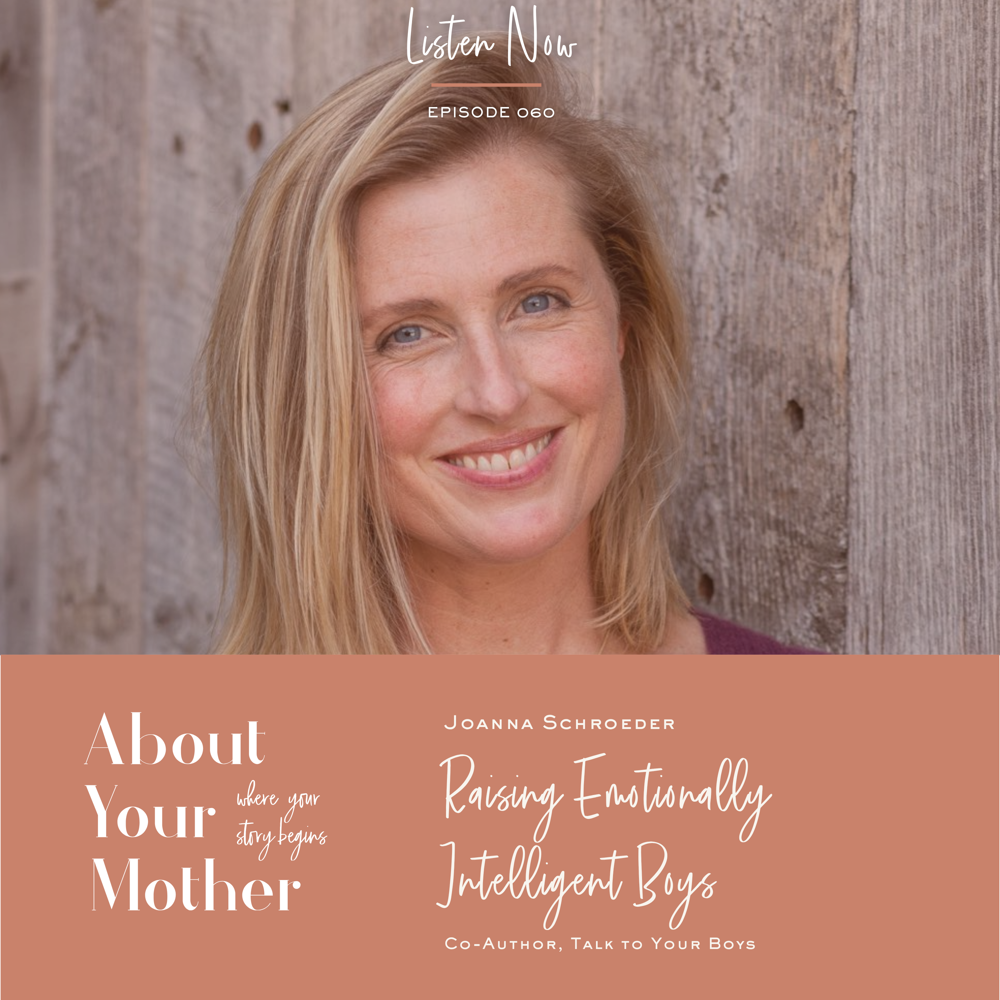

Joanna Schroeder
Thank you for trusting me with your story. Everything you need to share our conversation is on this page: listen links, captions you can post as-is, your own words pulled from the episode, and all the artwork. Share it however feels right to you.
Joanna Schroeder is a writer, editor, and media critic who is known for her bold voice and unique perspectives on parenting issues. Utilizing her degree in Gender Studies from UCLA, Schroeder gained valuable insights into modern masculinity while serving as Executive Editor of The Good Men Project. She currently serves as managing editor of the YourTango Experts program, where she works daily with experts such as psychologists, child development experts, life coaches and parenting consultants. She is mother to two teenage sons and a young daughter.
She is also co-host of the podcast Open Relationships: Transforming Together with Andrea Miller, where’s she interviewed expert guests like Dr. Helen Fisher, Dr. Stan Tatkin, Terrence Real, Marianne Williamson, and Drs. Helen LaKelly Hunt & Harville Hendrix.
Joanna has been published in The New York Times, Redbook, Good Housekeeping, Esquire, The Boston Globe, MSN, The Huffington Post and more. Her television and radio appearances include shows like “Red Table Talks” with Jada Pinkett-Smith, “AC360” with Anderson Cooper, “CBSN Originals” with Adam Yamaguchi, and interviews on networks such as CBC News, PBS, NPR, and The BBC. She’s a contributor to 'The Talk', an Edward R. Murrow Award winner in Excellence in Equity, Diversity and Inclusion.
Joanna gained national attention in 2018, after she wrote a series of tweets about teen boys and online extremism that went VERY viral. The experience was documented in the Washington Post, and then polished into an essay in the New York Times: “Racists Are Recruiting. Watch Your White Sons.”
For more about Joanna, including links to all of her social media, visit her LinkTree, and subscribe to her newsletter, Zooming Out.
Your episode is live
In 2019, media critic Joanna Schroeder spotted a Hitler meme in her son’s suggested Instagram posts. She kept scrolling and realized how often hate-based posts showed up in his suggestions.
Joanna shared her fear that social media platforms were targeting young boys on Twitter (when it was still Twitter), and she was met with a firestorm of feedback. Her experience led her to study the emotional lives of teenage boys and how parents can support them.
Listen in to learn how parents can make more space for their son’s emotions as they get older, help them open up, and use their parenting as a form of activism.
Resources Mentioned
Connect with the Guest
- Joanna’s book: Talk to Your Boys
- Instagram: @byjoannaschroeder
- Instagram: @talktoyourboysbook
- TikTok: @byjoannaschroeder
Embed codes
Paste into a website, newsletter, or Substack post.
<iframe src="https://embed.podcasts.apple.com/us/podcast/about-your-mother/id1522701752?i=1000803770555" height="175" allow="autoplay *; encrypted-media *; clipboard-write" sandbox="allow-forms allow-popups allow-same-origin allow-scripts allow-top-navigation-by-user-activation"></iframe>
<iframe src="https://open.spotify.com/embed/episode/6ZdTcFCo3GSgHjRqrlre7n" height="152" allow="autoplay; clipboard-write; encrypted-media; fullscreen; picture-in-picture"></iframe>
Ready to share
Written in your voice so you can post as-is or make them your own. Tag @byjennifergriffith and Jen will reshare.
Captions are on their way. Check back soon.
Your words
Pulled straight from the episode, with timestamps so you can find the moment.
““This is normal. This is healthy. This is not feminine. This is human.” — Joanna”
Joanna Schroeder
““They just want more love, tenderness, and a soft place to land.” — Joanna”
Joanna Schroeder
““Parenting these boys consciously is activism.” — Joanna”
Joanna Schroeder
““Be the anthropologist of your own child, their history, and their life, and look at what it all means.” — Joanna”
Joanna Schroeder
““They all wanna talk to their parents and be heard.” — Joanna”
Joanna Schroeder
Your assets

Episode cover art
The official artwork for this episode, sized for podcast platforms and social.
Download artworkAudio file
Full episode audio for reels, clips, or wherever you need it.
Please credit Jennifer Griffith and About Your Mother if you use the audio in clips or reels.
Download MP3Graphics
Click any image to download it.


More from the episode
- AYM - Joanna Schroeder - Reel #3 (video)
- AYM - Joanna Schroeder - Reel #3
- AYM - Joanna Schroeder - Episode Announcement (video)
- AYM - Joanna Schroeder - Episode Announcement
- AYM - Joanna Schroeder - Carousel (video)
- AYM - Joanna Schroeder - Carousel
- AYM - Joanna Schroeder - Reel #1 (video)
- AYM - Joanna Schroeder - Reel #1
- AYM - Joanna Schroeder - Reel #2 (video)
- AYM - Joanna Schroeder - Reel #2
- AYM - Joanna Schroeder - Reel Teaser Cover
Find Jen everywhere
About Your Mother: Where your story begins. Conversations about the influence our mothers had on the trajectory of our lives.
About Your Mother
Follow the show so you never miss an episode, and browse every conversation on the podcast page.
- @https://www.instagram.com/byjoannaschroeder/
- www.talktoyourboys.com/?utm_source=ig&utm_medium=social&utm_content=link_in_bio&fbclid=PAZXh0bgNhZW0CMTEAcGRvZgJzcnRjBmFwcF9pZA85MzY2MTk3NDMzOTI0NTkAAacaQ_K9hNwRoHx6KZ_dCBlYjLs_S_C5Z7nC_k9V-LlBsAPkeyVLIVLYkcGe1Q_aem_2DBS2IpLDylMlUA6whC4ew
If anything here is off, reply to Jen's email and we'll fix it.
Leave a review on Apple Podcasts
If our conversation meant something to you, a quick review helps About Your Mother reach the people who need it most. It takes about two minutes.
Leave a review